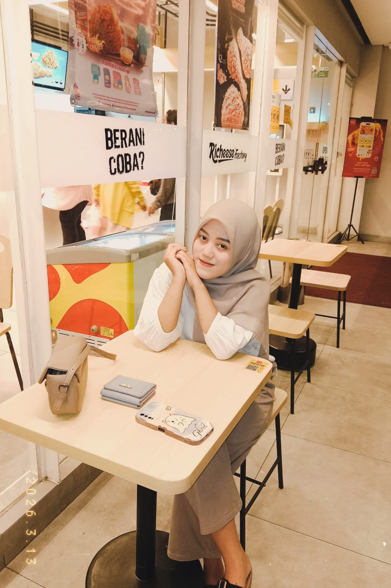

Digital Note
Aplikasi catatan digital dengan fitur CRUD lengkap — buat, lihat, edit, hapus catatan dengan field judul, isi, kategori, dan pin catatan.
Halo, saya
DevOps Support • Web Developer
Lulusan SMK Rekayasa Perangkat Lunak dengan pengalaman Praktik Kerja Lapangan sebagai DevOps Support di Sarastya Technology Integrata. Terbiasa membangun aplikasi web dengan React dan Laravel, serta mendukung proses deployment, dokumentasi teknis, dan konfigurasi sistem.

Tentang
DevOps Support dengan pengalaman satu tahun melalui program Praktik Kerja Lapangan di Sarastya Technology Integrata. Selama masa itu, saya terlibat dalam implementasi aplikasi, deployment frontend dan backend, penyusunan dokumentasi teknis dan user manual, hingga instalasi dan monitoring lingkungan server.
Di luar pekerjaan, saya mengembangkan proyek web pribadi menggunakan Laravel dan React untuk terus mengasah kemampuan, didukung MySQL dan GitHub sebagai alat kerja sehari-hari. Saya adalah pribadi yang teliti, adaptif, dan senang mempelajari hal baru di dunia teknologi.
Rekam jejak
Sarastya Technology Integrata — Malang, Indonesia
SMKS PGRI 03 Malang — Malang, Indonesia
Kemampuan
Karya
Aplikasi catatan digital dengan fitur CRUD lengkap — buat, lihat, edit, hapus catatan dengan field judul, isi, kategori, dan pin catatan.

Aplikasi manajemen tugas fullstack dengan autentikasi, ekspor PDF, dan tampilan modern menggunakan React dan Laravel.

Aplikasi manajemen bengkel mobil dengan dashboard admin, grafik penjualan, dan sistem pemasaran berbasis PHP native.

Aplikasi web untuk mengelola pendaftaran PKL siswa ke perusahaan, dilengkapi fitur manajemen pendaftaran, upload dokumen, dan approval oleh admin.

Personal portfolio website yang kamu lihat sekarang. Dibangun dengan HTML, CSS, dan JavaScript. Clean dan responsive.
Hubungi
Terbuka untuk kesempatan kerja maupun diskusi seputar web development dan DevOps. Silakan hubungi saya melalui salah satu kanal berikut.